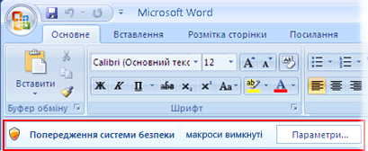
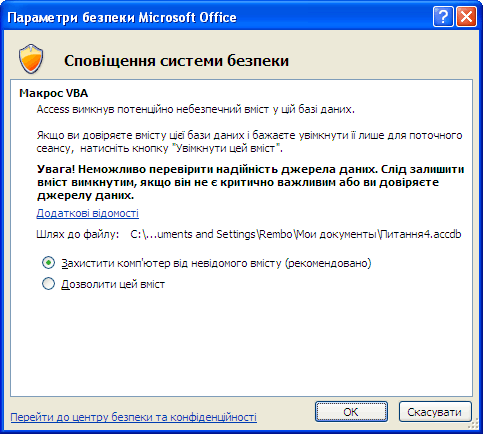

Увімкнення та вимкнення макросів у документах Office
-
Натисніть кнопку Microsoft Office
 , відтак натисніть кнопку Параметри Word.
, відтак натисніть кнопку Параметри Word.
- Виберіть категорію Центр безпеки та конфіденційності , натисніть кнопку Настройки центру безпеки та конфіденційності та виберіть пункт Настройки макросів.
- Виберіть потрібні параметри.
- Вимкнути всі макроси без сповіщення. Цю настройку варто використовувати, якщо ви не довіряєте макросам. Усі макроси в документах і оповіщення системи безпеки про макроси вимикаються. Документи з непідписаними макросами, яким ви довіряєте, слід помістити до надійного розташування. Документи в надійних розташуваннях можна запускати без перевірки системою безпеки Центру безпеки та конфіденційності.
- Вимкнути всі макроси зі сповіщенням. Це настройка за промовчанням. Варто використовувати її, якщо потрібно вимкнути макроси, але отримувати оповіщення системи безпеки в разі появи макросу. Таким чином, можна в кожному окремому випадку вирішувати, чи потрібно ввімкнути макроси.
- Вимкнути всі макроси, крім макросів із цифровим підписом. Ця настройка збігається з настройкою Вимкнути всі макроси зі сповіщенням за винятком того, що за наявності цифрового підпису надійного видавця макрос можна запустити, якщо ви вже довіряєте видавцеві. Якщо видавець не надійний, з’явиться сповіщення. Таким чином, можна вибрати один із варіантів: увімкнути такі підписані макроси або довіряти видавцеві. Усі непідписані макроси вимикаються без сповіщення.
- Увімкнути всі макроси (не рекомендовано, оскільки можливе виконання потенційно небезпечного коду) . Цю настройку варто використовувати, щоб тимчасово дозволити запуск усіх макросів. Вона робить комп’ютер уразливим для потенційно небезпечного коду, і вибирати цю настройку не рекомендовано.
- Довіряти доступ до об’єктної моделі проектів VBA. Ця настройка призначена для розробників і використовується для навмисного блокування або відкриття програмного доступу до об’єктної моделі VBA з будь-якого клієнта автоматизації. Інакше кажучи, за допомогою цього параметра забезпечується захист коду, написаного для автоматизації програми Office і автоматичного керування середовищем та об’єктною моделлю Microsoft Visual Basic for Applications (VBA). Ця настройка за промовчанням забороняє доступ; вона встановлюється окремо для кожного користувача та для кожного застосунку. Цей параметр захисту ускладнює для несанкціонованих програм створення "саморозмножувального" коду, який може зашкодити системам користувачів. Щоб будь-який клієнт автоматизації мав безперешкодний програмний доступ до об’єктної моделі VBA, користувач, який запускає код, має явно надати такий доступ. Щоб увімкнути доступ, установіть цей прапорець.
Як Центр безпеки й конфіденційності допоможе захиститися від небезпечних макросів?
Перш ніж увімкнути макрос у документі, Центр безпеки та конфіденційності перевіряє наведену нижче інформацію.
- Розробник підписав макрос за допомогою цифрового підпису.
- Цифровий підпис припустимий.
- Цей цифровий підпис діє (термін дії не вичерпано).
- Сертифікат, пов’язаний із цифровим підписом, видав центр сертифікації з гарною репутацією.
li> Розробник, який підписав макрос – це надійний видавець.
Якщо Центр безпеки й конфіденційності виявляє хоча би одну з перелічених проблем, цей макрос за промовчанням вимикається та відображається рядок повідомлення, який сповіщає про потенційну небезпеку.

Щоб увімкнути макрос, натисніть кнопку Параметри в рядку повідомлень, після чого відкривається діалогове вікно параметрів безпеки. У наступному розділі можна знайти інформацію про прийняття рішень щодо макросів і безпеки.
У програмах Microsoft Office Outlook 2007 - Українська версія і Microsoft Office Publisher 2007 - Українська версія оповіщення системи безпеки відображаються в діалогових вікнах, а не в рядку повідомлень.
Що робити в разі отримання запиту системи безпеки про ввімкнення або вимкнення макросу?
Коли з’являється діалогове вікно параметрів безпеки, можна ввімкнути макрос або залишити його вимкнутим. Вмикати макрос слід лише тоді, коли ви впевнені в його походженні з гідного довіри джерела.

Увага! Якщо ви впевнені, що документ або макрос походять із надійного джерела або мають дійсний цифровий підпис, і не бажаєте отримувати сповіщення про них знову, замість змінення параметрів безпеки макросів Центру безпеки та конфіденційності за промовчанням на менш надійні, у діалоговому вікні системи безпеки можна вибрати пункт Довіряти всім документам цього видавця . Цього видавця буде додано до списку надійних видавців у Центрі безпеки та конфіденційності. Усе програмне забезпечення цього видавця буде вважатися надійним. Якщо макрос не підписано дійсним цифровим підписом, але ви довіряєте його видавцю й не бажаєте отримувати сповіщення знову, замість змінення параметрів безпеки макросів Центру безпеки та конфіденційності за промовчанням на менш надійні, краще перемістити документ до надійного розташування . Документи в надійних розташуваннях можна запускати без перевірки системою безпеки Центру безпеки та конфіденційності.
Залежно від ситуації, у діалоговому вікні системи безпеки описується певна проблема. У наведеній нижче таблиці міститься перелік можливих проблем і поради щодо того, які дії слід чи не слід виконувати в кожному окремому випадку.
 НА ПОЧАТОК СТОРІНКИ
НА ПОЧАТОК СТОРІНКИ